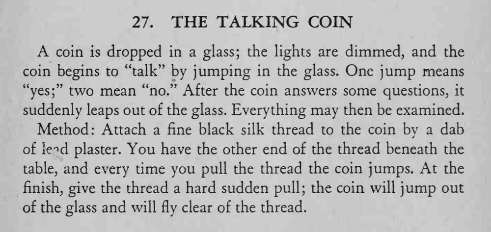

硬币丢进玻璃杯后，灯光转暗，硬币在杯中跳动“说话”：跳一下表示“是”，两下表示“否”。回答几个问题后，硬币突然跳出杯子，随后所有道具都可检查。
丝线要细而黑，拉线幅度小而匀；最后猛拉必须干脆，让硬币带着惯性脱线飞出。

A coin is dropped in a glass; the lights are dimmed, and the coin begins to "talk" by jumping in the glass. One jump means "yes;" two mean "no." After the coin answers some questions, it suddenly leaps out of the glass. Everything may then be examined. Method: Attach a fine black silk thread to the coin by a dab of le^d plaster. You have the other end of the thread beneath the table, and every time you pull the thread the coin jumps. At the finish, give the thread a hard sudden pull; the coin will jump out of the glass and will fly clear of the thread.